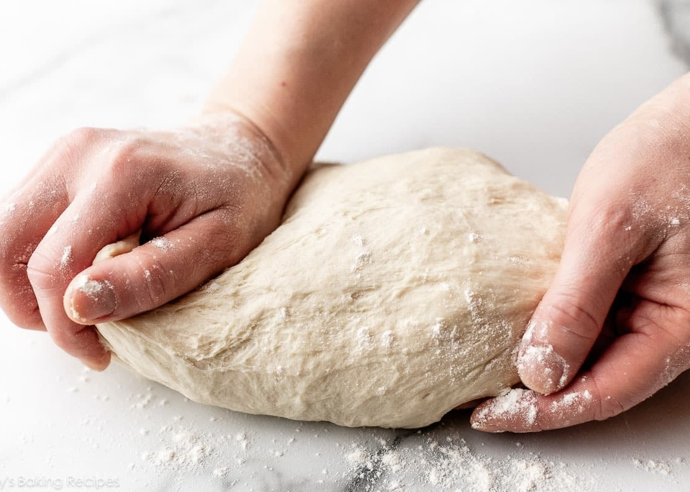

Тайните на доброто тесто: Как да приготвите перфектно тесто за хляб, пица и сладкиши
Тестото е в основата на много от любимите ни ястия – от пухкав хляб и ароматна пица до нежни сладкиши. Но постигането на перфектно тесто често изглежда като сложна задача. Тази статия ще ви разкрие тайните на успешното тесто и ще ви научи как да го приготвяте лесно, независимо дали сте начинаещ или напреднал в кухнята.
Основни съставки за тестото
- Брашно: Пшенично, царевично или с високо съдържание на глутен за различни рецепти.
- Мая: Прясна, суха или сода за хляб.
- Течности: Вода, мляко и яйца за структура и вкус.
- Мазнини: Масло, зехтин или свинска мас за мекота и аромат.
- Захар и сол: Захарта подхранва маята, а солта балансира вкуса.
Видове тесто и тяхната употреба
Тесто за хляб: Еластично и добре втасало, за хрупкава коричка и меко вътрешно.
Тесто за пица: Леко и еластично, втасва продължително време за автентичен вкус.
Тесто за сладкиши: Богато на масло, мляко и яйца за нежна текстура.
Процес на приготвяне на тесто
- Пресяване на брашното: Добавя въздух за по-леко тесто.
- Смесване на съставките: Постепенно смесване на мокри и сухи съставки.
- Месене: Активира глутена за еластичност.
- Втасване: Оставете тестото да удвои обема си.
- Оформяне и печене: Следвайте рецептата за перфектен резултат.
Чести грешки и решения
- Тестото е лепкаво: Добавете още брашно, но умерено.
- Тестото не бухва: Проверете температурата на течностите и маята.
- Тестото е твърдо: Намалете брашното или месете по-кратко.

Тайни за перфектно тесто
Контролирайте температурата, използвайте качествени съставки и месете равномерно за най-добри резултати.
Съвети за съхранение
Съхранявайте тестото в хладилник за 48 часа или във фризер за по-дълго време.